Homem-Aranha: Sem Volta Para Casa é do mesmo diretor dos sucessos Homem-Aranha: Longe de Casa (2019) e
Homem-Aranha: De Volta ao Lar (2017). A vida de Peter Parker (Tom Holland) se tornou um verdadeiro caos
depois que sua identidade foi revelada para o mundo pelo vilão Mysterio. A inseparável Mary Jane
(Zendaya) tenta ajudá-lo a encarar esse fato como algo positivo, mas o jovem super-herói não se conforma
e busca uma solução. Parker procura o parceiro Doutor Estranho (Benedict Cumberbatch) e pergunta se ele
não conseguiria retirar essa informação da memória das pessoas. O arriscado feitiço foi colocado em
prática, mas ao alterar a realidade eles criaram uma situação ainda mais perigosa.
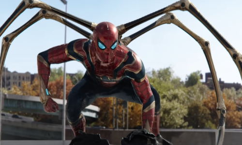
Aranha de ferro
O Aranha de Ferro criado por Tony Stark tinha um monte de características únicas e mais tecnológicas do
que o traje clássico de Peter. Confira alguns atributos que esse traje possuía: Três braços mecânicos
suplementares que se expandem a partir de um compartimento em forma de circulo que fica nas costas do
traje.
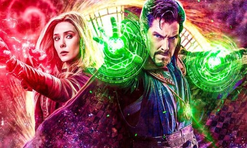
Doutor Estranho
Após sua carreira ser destruída, um brilhante, porém arrogante, cirurgião ganha uma nova chance em sua
vida quando um feiticeiro o treina para se tornar o Mago Supremo.
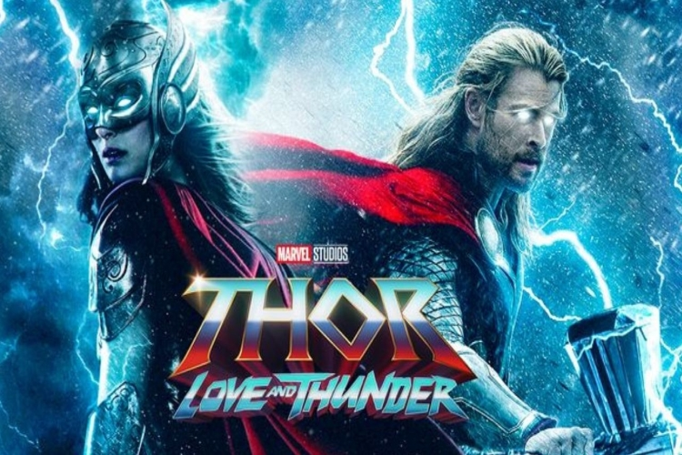
Thor: Love and Thunder
Após salvar seu povo da destruição, o Deus do Trovão cruzou o caminho de Thanos e sua missão para reunir
as Joias do Infinito. ... Considerando que o longa apresentará Jane Foster como nova Thor, a trama
aponta para uma aventura em que o Filho de Odin vai questionar seu papel enquanto Deus do Trovão.
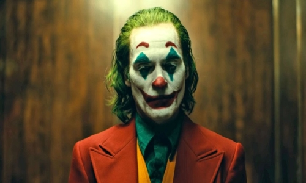
Coringa
Isolado, intimidado e desconsiderado pela sociedade, o fracassado comediante Arthur Fleck inicia seu
caminho como uma mente criminosa após assassinar três homens em pleno metrô. Sua ação inicia um
movimento popular contra a elite de Gotham City, da qual Thomas Wayne é seu maior representante.
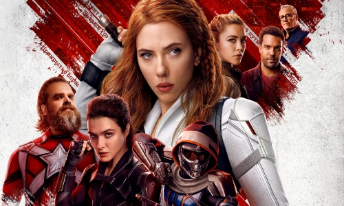
Viúva Negra
Ao nascer, a Viúva Negra, então conhecida como Natasha Romanova, é entregue à KGB, que a prepara para se
tornar sua agente suprema. Porém, o seu próprio governo tenta matá-la quando a União Soviética se
desfaz.
 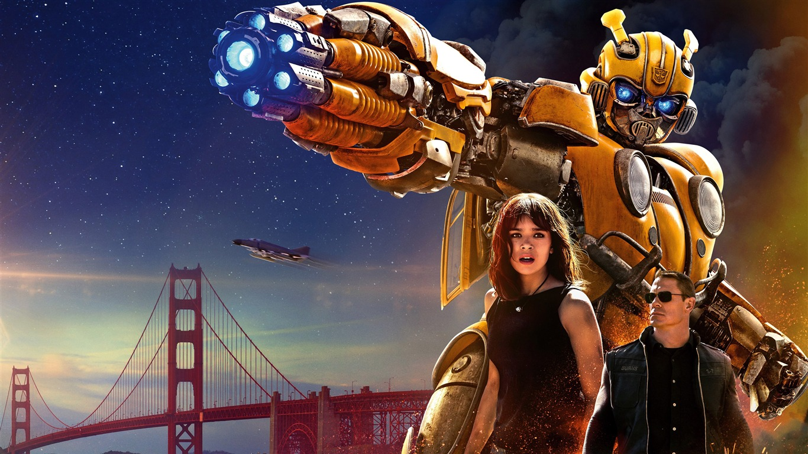
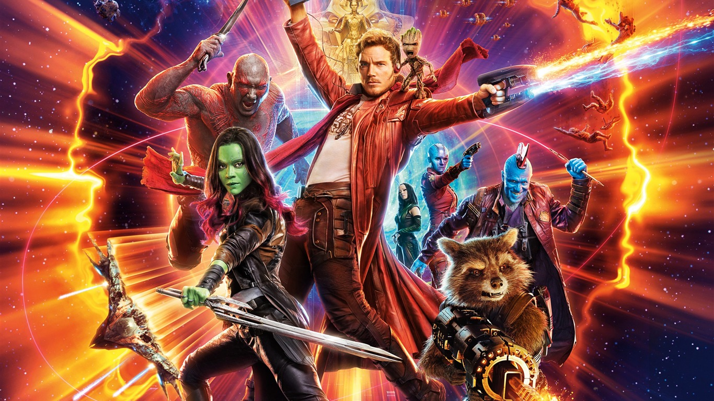
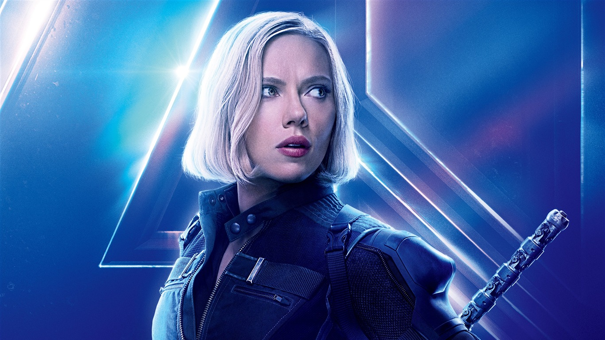
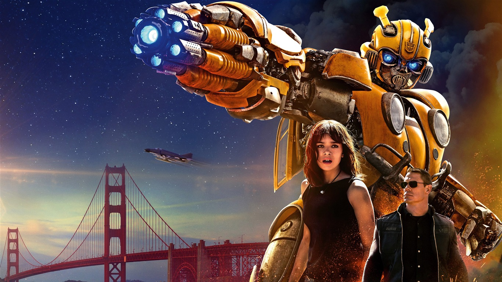
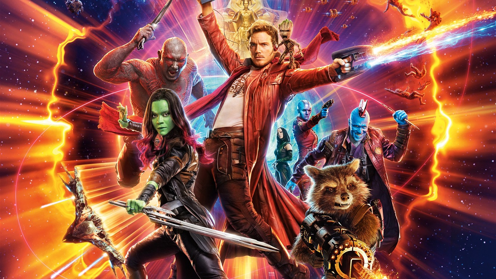
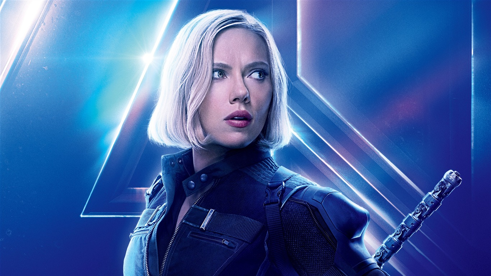